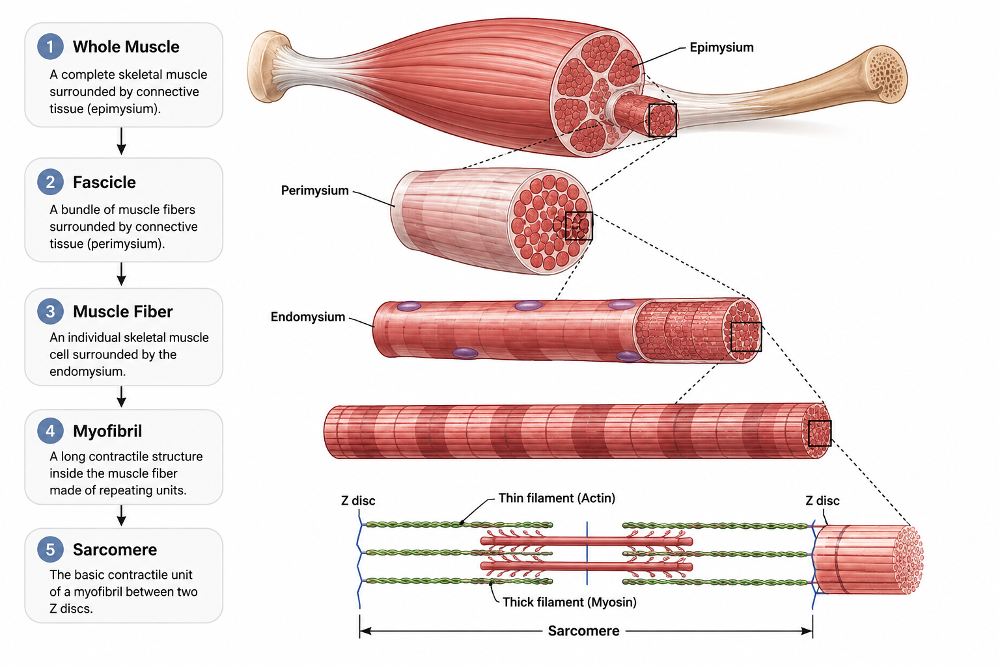
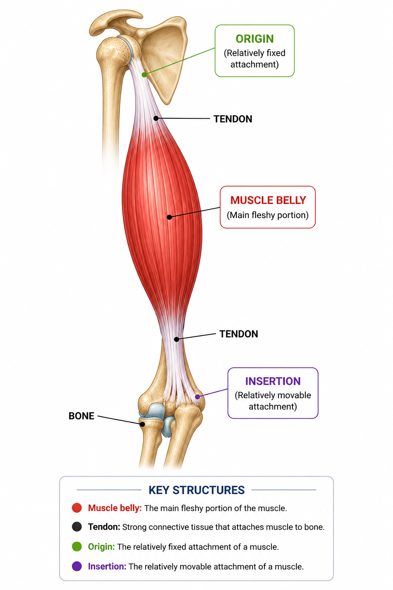
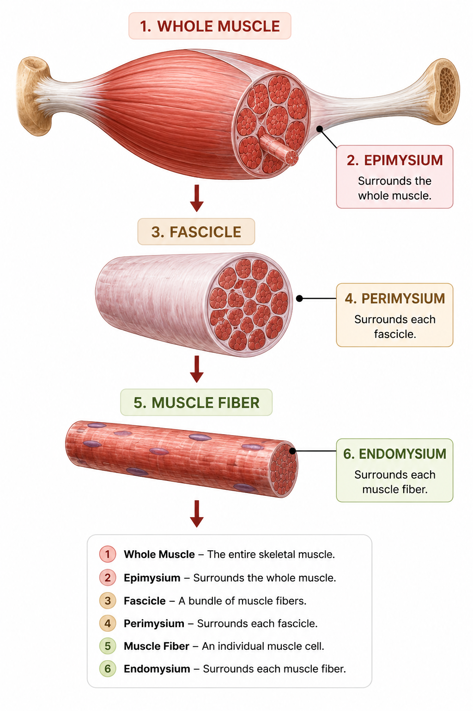
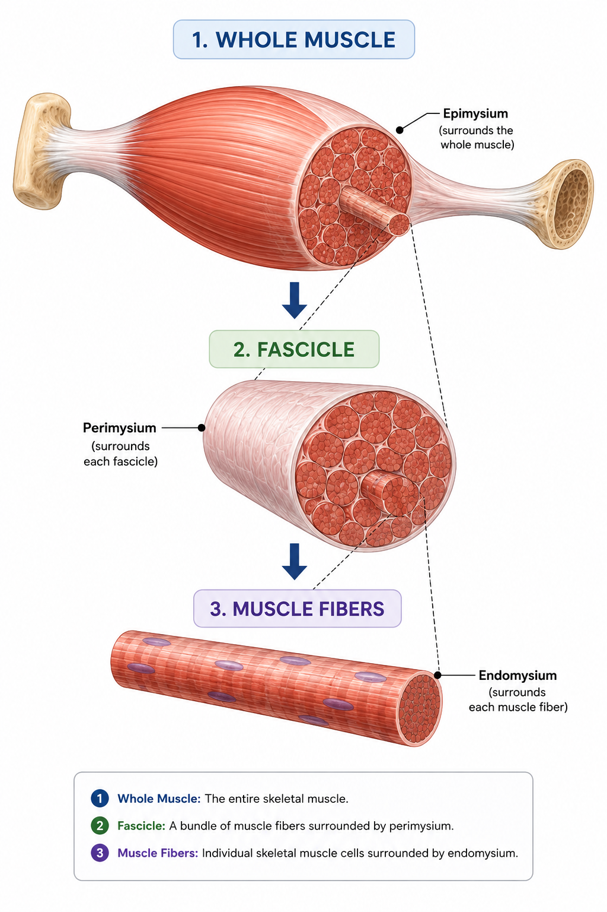
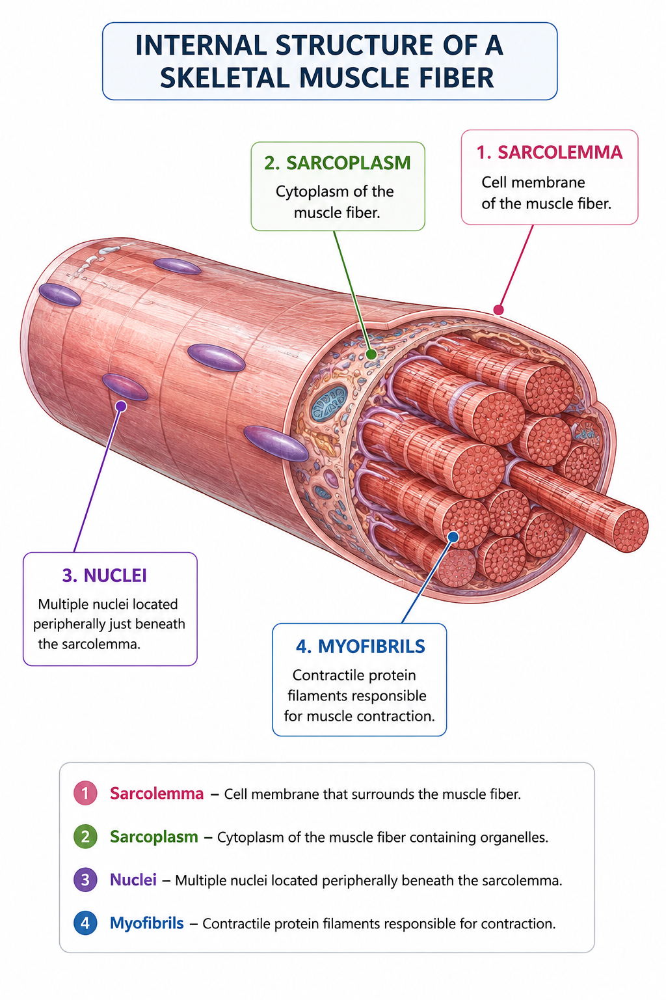
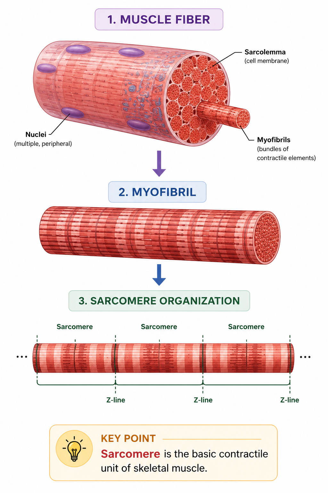
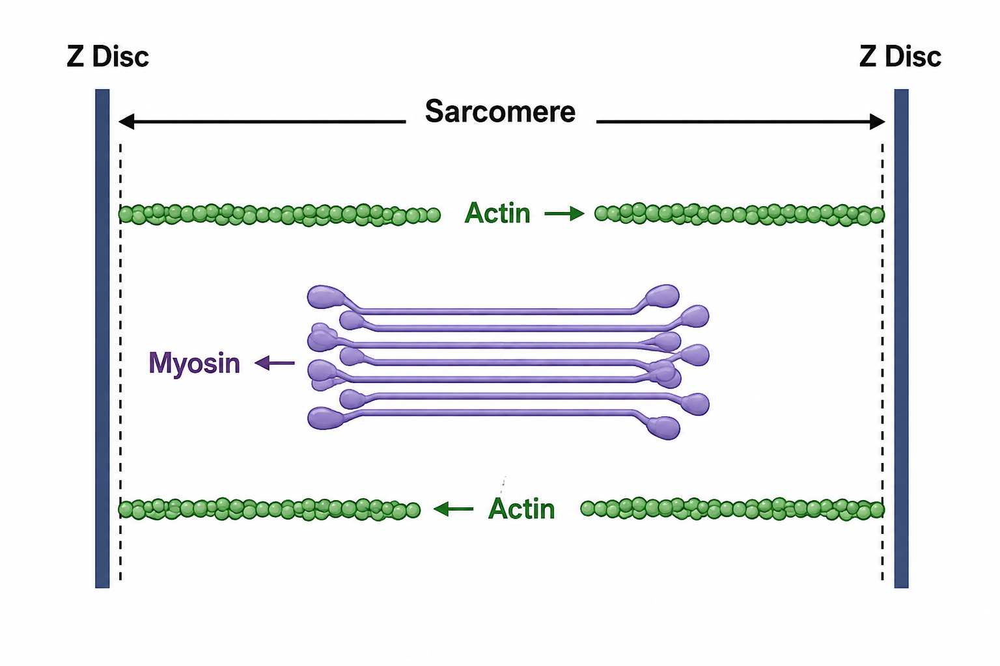
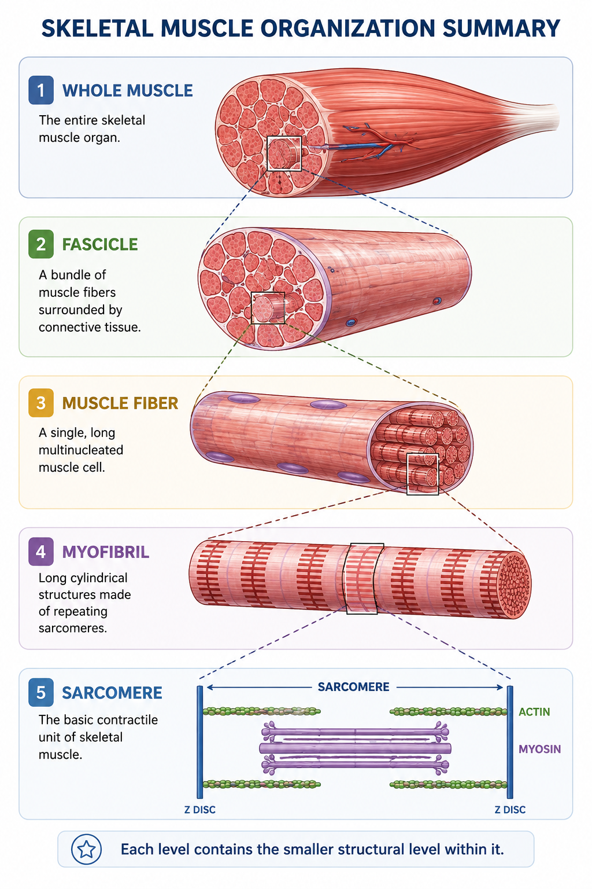

Skeletal muscles are organized structures made of smaller components arranged in a clear structural hierarchy. From the whole muscle to the microscopic sarcomere, each level contains the next level of organization.
📑 Table of Contents
- 📖 Introduction to Skeletal Muscle Anatomy
- 🦴 Gross Anatomy of a Skeletal Muscle
- 🧩 Connective Tissue Coverings
- 🔬 Fascicles and Muscle Fibers
- 🧬 Internal Structure of a Muscle Fiber
- 🧩 Myofibrils and Sarcomeres
- ⚙️ Basic Structure of a Sarcomere
- 🧠 From Whole Muscle to Sarcomere
- 📚 Key Anatomy Terms
- 📌 Quick Revision
- ❓ Practice Quiz
📖 Introduction to Skeletal Muscle Anatomy
A skeletal muscle is not a single simple structure. It is organized into bundles and progressively smaller structures that work together to produce muscular force.
Understanding this organization provides the structural foundation for understanding how skeletal muscle contracts.

🦴 Gross Anatomy of a Skeletal Muscle
At the gross anatomical level, a skeletal muscle contains a main muscular portion and connective structures that attach it to bones.

📌 Key Structures
- Muscle belly: The main fleshy portion of the muscle.
- Tendon: Connective tissue structure that attaches muscle to bone.
- Origin: The relatively fixed attachment of a muscle.
- Insertion: The relatively movable attachment of a muscle.
| Structure | Basic Role |
|---|---|
| Muscle belly | Main muscular portion |
| Tendon | Attaches muscle to bone |
| Origin | Relatively fixed attachment |
| Insertion | Relatively movable attachment |
🧩 Connective Tissue Coverings
Skeletal muscle is supported and organized by connective tissue layers that surround the muscle at different structural levels.

Figure 4.3 — Connective Tissue Coverings of Skeletal Muscle
Epimysium
Surrounds the whole muscle.
Perimysium
Surrounds each fascicle.
Endomysium
Surrounds each individual muscle fiber.
| Layer | Surrounds | Basic Role |
|---|---|---|
| Epimysium | Whole muscle | Covers the entire muscle |
| Perimysium | Fascicle | Organizes muscle fibers into fascicles |
| Endomysium | Muscle fiber | Surrounds each individual muscle fiber |
🔬 Fascicles and Muscle Fibers
A skeletal muscle contains groups of muscle fibers. These groups are called fascicles.
A muscle fiber is an individual skeletal muscle cell.

Fascicle
A bundle of muscle fibers surrounded by perimysium.
Muscle Fiber
An individual skeletal muscle cell containing many myofibrils.
🧬 Internal Structure of a Muscle Fiber
A skeletal muscle fiber is a specialized muscle cell containing structures that support contraction.

| Structure | Basic Description |
|---|---|
| Sarcolemma | Cell membrane of the muscle fiber |
| Sarcoplasm | Cytoplasm of the muscle fiber |
| Nuclei | Cellular control structures |
| Myofibrils | Contractile structures inside the muscle fiber |
🧩 Myofibrils and Sarcomeres
Myofibrils are long contractile structures found inside muscle fibers. They are organized into repeating units called sarcomeres.

Myofibrils contain repeating sarcomeres, which are the basic contractile units of skeletal muscle.
⚙️ Basic Structure of a Sarcomere
A sarcomere is the repeating contractile unit within a myofibril. It contains thin and thick protein filaments arranged between Z discs.

| Structure | Basic Idea |
|---|---|
| Z disc | Marks the boundary of a sarcomere |
| Actin | Thin filament |
| Myosin | Thick filament |
| Sarcomere | Basic contractile unit of skeletal muscle |
A sarcomere extends from one Z disc to the next.
🧠 From Whole Muscle to Sarcomere
The complete organization of skeletal muscle can now be viewed as a series of nested structural levels.

| Level | Contains |
|---|---|
| Whole Muscle | Fascicles |
| Fascicle | Muscle fibers |
| Muscle Fiber | Myofibrils |
| Myofibril | Sarcomeres |
| Sarcomere | Actin and myosin filaments |
📚 Key Anatomy Terms
📌 Quick Revision
✅ Skeletal muscle is organized into progressively smaller structural levels.
✅ Fascicles are bundles of muscle fibers.
✅ A muscle fiber is an individual skeletal muscle cell.
✅ Myofibrils are contractile structures inside muscle fibers.
✅ Myofibrils contain repeating sarcomeres.
✅ Epimysium surrounds the whole muscle.
✅ Perimysium surrounds fascicles.
✅ Endomysium surrounds individual muscle fibers.
✅ A sarcomere extends from one Z disc to the next.
✅ Sarcomeres contain actin and myosin filaments.
Muscle → Fascicle → Muscle Fiber → Myofibril → Sarcomere
❓ Practice Quiz
Test your understanding of skeletal muscle organization and anatomy.